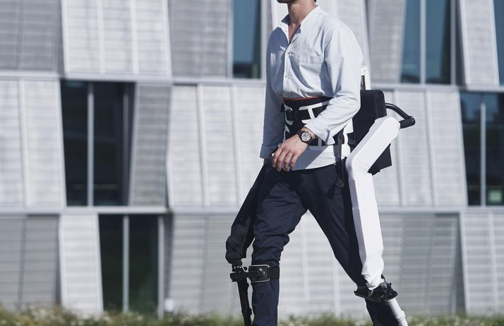

Exoskeleton-Assisted Gait Analysis in Patients with Muscular and Neurological Deficiencies
Abstract
Autonoymo is a start-up that collaborated with Rehabilitation and Assistive Robotics (REHAssist) research group from EPFL to develop a lower limb exoskeleton to assist people with motor deficits. I had the opportunity to extract data from a motion tracking sensor (Vicon) and from the motion and force sensors of the exoskeleton. I coded algorithms to extract gait cycles and observed the kinematics of participants to visualize the effect of impedance parameters on the control of the motors. The results showed a variation in the range of motion and the symmetry of the gait cycle depending on the neurological condition of the participants.

Personal Outcome
I thoroughly enjoyed meeting fascinating collaborators who introduced me to the world of robotics, electronics, and control engineering. Their insights have motivated me to pursue personal Arduino projects.